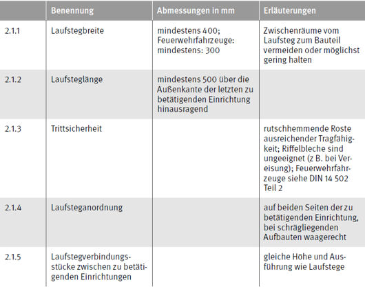
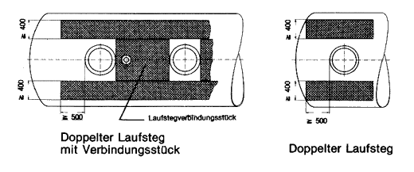
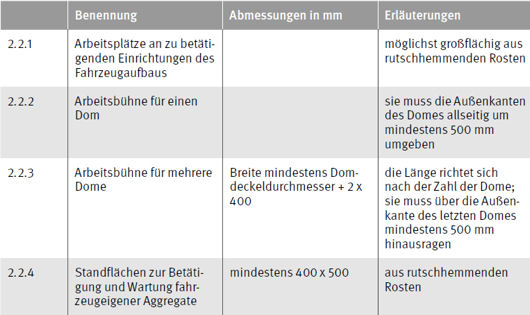
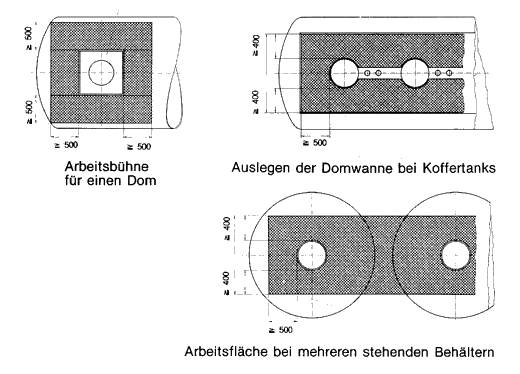
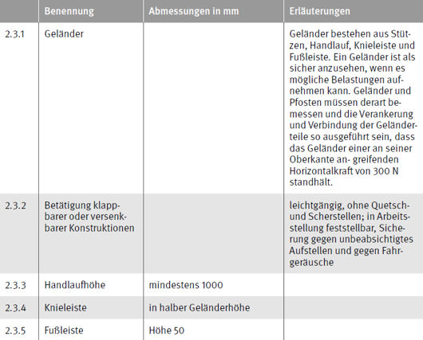
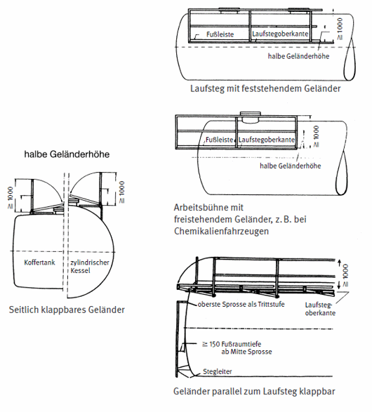

2 Arbeitsplätze auf Fahrzeugen
2.1 Laufstege


2.2 Arbeitsplätze (Bühnen) und Standflächen


2.3 Absturzsicherungen

Hinweise
- Geländer – wo feststehende Anbringung nicht möglich – so klappen oder absenken, daß Laufstege und Arbeitsplätze (
Bühnen) sicher begehbar bleiben, wenn das Geländer, z. B. infolge unzureichender Höhe der Ladestelle, nicht
aufgestellt werden kann.
- Seile an Stelle von Handläufen sind nicht zulässig, ausgenommen bei Autotransportern; siehe dazu § 24 Abs. 5 Nr.
1. Seile an Stelle von Knieleisten sind zulässig.
- Für Feuerwehrfahrzeuge siehe auch § 24 Abs. 5 Nr. 2.
